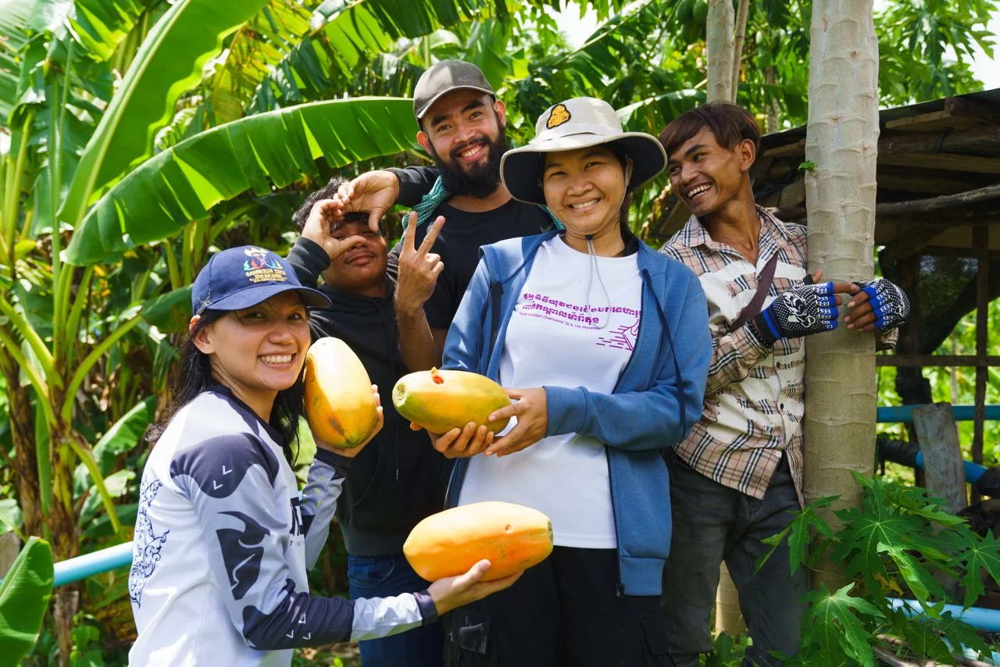

Awakening Young Farmer
Growing the next generation of regenerative farmers through practical learning, enterprise, and community.

Created through the 2023 YSEALI Seeds for the Future grant, Awakening Young Farmer connects personal development, agroecological learning, and agripreneurship. It starts with a simple belief: farming can offer young people a meaningful future when they have the knowledge, confidence, and support to shape it.
Learning that begins with people
The original model brought together three connected programs: Youth Develop Youth, Agroecology Youth, and Young Agripreneur. Together, they linked personal development and money management with vegetable garden apprenticeships and support for small-scale farming businesses.
Early progress, documented in 2023
The U.S. Mission to ASEAN project highlight reported seven core youth participants from four provinces, five sites identified for diversified vegetable gardens, and completion of a three-day training in Phnom Penh. These are historical milestones from the YSEALI-supported phase, rather than a measure of current reach.
A foundation for the next chapter
Dassatek’s longer-term ambition is to connect regenerative production with viable livelihoods. The experience of Awakening Young Farmer informs our direction toward a commercial regenerative farm and training institute, with practical learning grounded in real farming.



Bring your curiosity.
Let’s make it useful.
Connect with us about partnerships, research, learning, or an idea worth exploring.